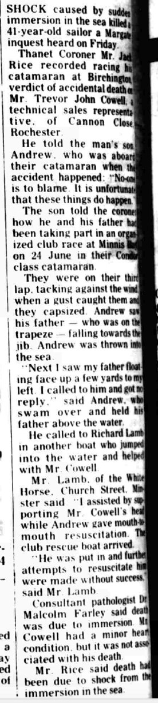
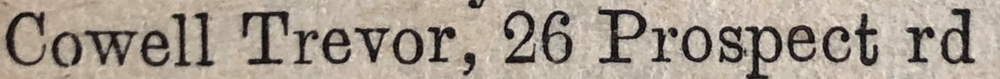

Trevor John Cowell 1938 - 1979
[ Home ] | [ Calendar ] | [ Surnames Index ] | [ Family History ]The older of 2 children of Charles Cowell (a truck driver) and Edith Bailey, Trevor Cowell, a cousin on the mother's side of <a href="I1.html">Nigel Horne</a>, was born in Thanet, Kent, England on Jun 8, 1938<span class="citation">1,2,3,4</span> and. He married Muriel Knox (with whom he had 2 surviving children <a href="I1553.html">Charles J</a> and <a href="I1552.html">Andrew J</a>) in Thanet around Aug 1959<span class="citation">5</span>.</p><p>Trevor spent all of his life in Kent, England. Throughout his life, he lived in several places around the county: on Sunnymeade, Monkton Road, Minster in Thanet on Sep 29, 1939<span class="citation">1</span>; on 26 Prospect Road, Birchington, Kent, England in 1963<span class="citation">7</span> and in 1965<span class="citation">6</span>; and at 8 Canon Close, Rochester in 1979. <p>He died on Jun 24, 1979 in Thanet<span class="citation">4</span> (drowned while trying to save his son's life).
Parents
- Charles John was born on Jan 4, 1911
- Edith Mary was born on Feb 13, 1914
Citations
- 1939 Register - Findmypast (was the son of the head of the household)
- England & Wales deaths 1837-2007 - Findmypast
- England & Wales, Birth Index: 1916-2005 Online publication - Provo, UT, USA: The Generations Network, Inc., 2008.Original data - General Register Office. England and Wales Civil Registration Indexes. London, England: General Register Office. © Crown copyright. Published by permission of the Cont
- England & Wales, Death Index: 1984-2005 Online publication - Provo, UT, USA: The Generations Network, Inc., 2007.Original data - General Register Office. England and Wales Civil Registration Indexes. London, England: General Register Office. © Crown copyright. Published by permission of the Cont
- England & Wales, Marriage Index: 1916-2005 Online publication - Provo, UT, USA: The Generations Network, Inc., 2009.Original data - General Register Office. England and Wales Civil Registration Indexes. London, England: General Register Office. © Crown copyright. Published by permission of the Cont
- 1965 Kelly's Thanet Directory
- 1963 Kelly's Thanet Directory
Media
Trevor John Cowell - probate

Thanet Times - 10 Jul 1979

Thanet Times - 27 Aug 1979

1965 Kelly's Thanet Directory

1963 Kelly's Thanet Directory

England & Wales marriages 1837-2008 - BMD/M/1959/3/AZ/000323/122
England & Wales births 1837-2006 - BMD/B/1938/3/AZ/000243/134
England & Wales deaths 1837-2007 - BMD/D/1979/3/AZ/000202/079
1939 Register Transcription - TNA-R39-1820-1820E-019-32
1939 Register Transcription - TNA-R39-1820-1820E-019-31
1939 Register Image - TNA-R39-1820-1820E-019
Family Tree

Generated by Ged2Site. Last updated on Jul 20, 2025